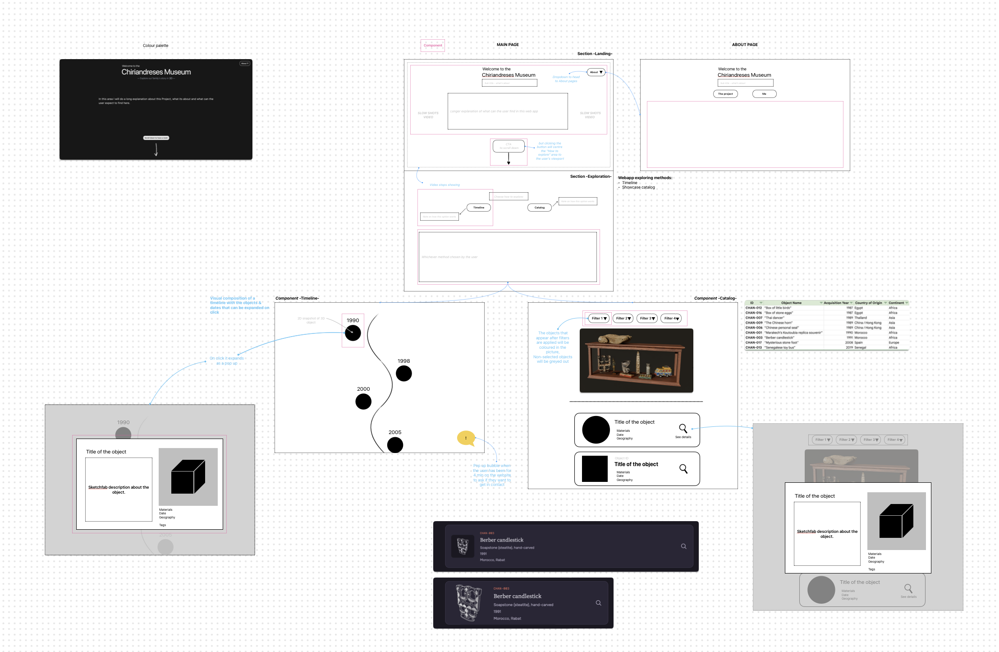

What is Chiriandreses Museum?
"An object in a museum is a condensed story,
a silent witness waiting for a listener."
Sandra Dudley
Museum Materialities: Objects, Sense and Feeling (2009)
Chiriandreses Museum is the culmination of a personal, end-to-end 3D digitisation project of my family's heirlooms and travel mementos — it is a portal where you can see and interact with their 3D models, explore their digitisation notes, and learn about my family's stories encapsulated in them.
My parents have a vitrine in their living room filled with travel objects and treasures - these hold the stories of their romance, of how our family came to be. I love hearing what's behind each piece, and every time I look into this vitrine again, a new object appears - a new story to hear.
But these stories only live in their heads - and one day they won't be here to share them. So I decided to record them - so I can listen to them for years to come, and pass them on to my own family one day.
So how did I do it?
Using photogrammetry techniques, every object was digitised as if they were a museum object — aiming for high-quality models, best model-object fidelity given the available hardware and my current skills, and achieve a high-end degree of traceability.
To achieve these targets, I have:
- Followed the guidance offered by the 3D4CH centre on how to produce high-quality 3D digitisation models for Cultural Heritage, along with some tips from photogrammetry professionals in the field from different community forums.
- Implemented the European Commission's VIGIE 2020/654 framework to learn-while-doing the current best practices on paradata and metadata for the Cultural sector.
The result is a 7-month, 6-stages thoroughly documented digitisation project spanning from photography, to metadata gathering, processing of 3D models and, finally, sharing them into a curated digital platform.
It's an honest, personal record of what was truly measured or estimated, some playful experiments, and a journal of models that never came-to-be, and why.
A technical and a personal journey
You can learn about the project from two angles — the pure technical record, and my personal learning journey behind it:
In THE PROJECT section you will find a friendlier, stage-by-stage walkthrough of the digitisation pipeline, what happened in each step of the way. Within this section, the Project archive gathers all the detailed, outputted technical records.
MY JOURNEY section contains the more personal side of the project. Lab journal is a day-by-day journal of the challenges I faced, how I tried to tackle them (and how I sometimes failed) and what I learned from them along the way. I captured my biggest takeaways and questions in Lessons learned — hopefully, it can help other peers avoid my same mistakes!

About me
Long story short: I’m an archaeologist in love with all things digital - diving into how 3D interactive data can offer new ways of experiencing, studying and preserving cultural heritage in the digital space.
During my BA in Archaeology and Anthropology at UCL, I found myself very early on gravitating towards Digital Humanities. My very first true hands-on experience with 3D and digitisation techniques was during this time, when I was a post-ex supervisor overseeing the finds processing pipeline of a student-led excavation.
While I was structuring the excavation’s database, I realised that I didn’t want all these great pieces of information to just stay as rows in a database. So I decided to implement a new photographic workflow using artefact photography, photogrammetry and RTI for the 2D and 3D visual documentation of our most relevant artefacts and trenches.
This way I could enable them to be interacted with outside of the dig, facilitating possible further specialist analysis, or their display in classrooms and local exhibitions. This experience sparked in me a deep intrigue for the potential of advanced imagery to enhance accessibility, dissemination and research in Cultural Heritage.


Some of the excavation’s artefact photographs being displayed in a temporary exhibition in Weald & Downland Living Museum (2023)
Managing media and data across this excavation and other Digital Archaeology projects *3,4 taught me how to successfully navigate the real-world struggles of generating digital media within tight budgets, timelines, and not the most “cushy” environments.
I experienced the importance of traceability in Heritage (but how easy it is to lose sight of it too) and equally so, to pay attention to the labelling and organisation of that generated media so that its reuse does not become a derived struggle afterwards. That’s when software, documentation and digital asset management became just as much of a passion for me as Cultural Heritage itself.
I decided to stop being just a ‘user’ of software and really get to understand how it gets built. After a deep dive in software programming and Cloud architecture *1,7 I spent the last couple of years working in SaaS software technical support, learning first-hand how web apps get deployed and iterated on in the real world, and how digital experiences get curated. I got pretty good at helping both internal and client teams do their best work when problems arose *6 , eventually supporting the documentation and development of a Digital Asset Management cloud platform.
Ultimately, Chiriandreses Museum is where all of that technical and archaeological knowledge merges. An end-to-end digitisation pipeline that spans from initial project planning and field photography to data processing, culminating in that key final step: sharing the stories behind the geometric data through an curated, interactive platform.

Other relevant experience:
- (*1) CodeFirstGirls alumni: 'CFGDegree' in Software & Data Engineering (Merit) & '+Masters' in DevOps & Cloud (Distinction). Back-end and front-end programming skills, Cloud software architecture knowledge, and UX/UI notions
- (*2) Europeana's Digital Storytelling Resident 2026 Produced a video exploring the existential dread caused by the loss of authenticity in the age of AI. Designed and developed under the mentorship of Europeana professionals on storytelling techniques to reuse digital cultural heritage.
- (*3) Contributed to the University of Oxford’s “MarEA Project”. Researching cyclonic impacts on Omani maritime heritage. My work was published in the project’s website.
- (*4) Assistant to “Monumentality and Landscape: Linear Earthworks in Britain” (UCL Institute of Archaeology & Durham University, Leverhulme Trust-funded) Database development and grey literature retrieval.
Awards & recognition:
- (*5) Awarded the 2022 Peter Dorell Prize (UCL Institute of Archaeology) For the "high quality" of the photographic dataset produced - including 3D photogrammetry and RTI models - which enhanced the accessibility of key excavation's artefacts for further specialist research.
- (*6) Avalara “Customer Champion” award for Q1 2025 For my “unwavering commitment to putting customers first. With nearly 90% of Avalara Europe’s glowing Trustpilot reviews and continues to set the gold standard for CSAT across the team.”
- (*7) 'Highly commended candidate' award x2 For my work on the group final projects of two of CodeFirstGirls Kickstarter short-courses: Python & Apps | Javascript
Project lifecycle
An overview of the six stages that involved turning a family object into a digital story:
-
Stage 01
Project planning
Project morphology designed to follow the EC's VIGIE 2020/654 study framework and 3D4CH guidelines for 3D digitisation projects in Cultural Heritage. Drew out timelines, requirements, and individual object complexity prior to the start of their photography.
-
Stage 02
Photography
Turntable photogrammetry capture — 18 objects photographed within 1 week of access at the end of February 2026. Both experimental and result-driven approaches were used.
-
Stage 03
Photogrammetry processing
Using Agisoft Metashape: tie points, point cloud, mesh and texture reconstruction, implementing AI-masking workflows. Developed ‘HeritageScan’ (custom RealityKit CLI) as an experimental second algorithm where the standard pipeline failed.
-
Stage 04
Post-processing
Blender: retopology, UV unwrap, normal / AO bakes, mesh cleanup. Roughness and metallic maps are authored here — measured where possible, judged by eye where not, and flagged as such.
-
Stage 05
Metadata & paradata
Gathering and organising records. One merged source of truth per object: family metadata and captured digitisation process paradata (equipment, angles, image counts, Metashape calculations & deliverables). Pinning down every value that was graded, and what was estimated.
-
Stage 06
The website
Ten finished models on Sketchfab, embedded in a purpose-built site with the full provenance record beside each one. Released under CC BY-NC-SA 4.0.
Stage-by-stage
A closer walkthrough of what happened at each stage of the digitisation pipeline:
Stage 01
Project planning
The project holds three main aims:
- To generate 'museum-aligned', high-quality 3D models of my family heirlooms and travel objects collection, given the available hardware and my current skills. That meant aiming for optimal geometric data, best possible model-object fidelity, and high-degree of traceability.
- Following digital storytelling techniques, make these 3D models publicly accessible through a curated, interactive and user-friendly web experience.
- To deepen and specialise my 3D digitisation skills for the Museum space, by applying the most up-to-date professional standards required in Cultural Heritage.
For such, the project was divided in two strands:
-
CM-D001 — Digitisation campaigns:
Generating 3D models of the objects using photogrammetry.
-
CM-W001 — Webapp:
Design & development of a digital platform to allow the interaction with the generated 3D models and their data.
These strands were designed to be both reiterated if needed (re-capturing objects that didn't work the first time) and expanded (e.g. CM-D002, etc...) as I do more digitisation rounds in the future, or I roll out new versions of the website.
Because of the pragmatic learning nature of this project and ever-expanding aim, there were a handful of objects that were also photographed purely as experiments, with no expectation of generating usable models to be exposed this first instance.
The project's documentation framework (i.e. deciding what and how things should be documented) was designed for a solo practitioner, following the below:
- Best-practice standards set by the European Commission for best-quality digitisation processes in Cultural Heritage (set in the VIGIE 2020/654 study) which heavily focus on high-traceability.
- The professional guidance provided by the 3D4CH Competence Centre — in particular its Essential Guide to 3D Digitised Heritage training series, and the “Capturing and Processing 3D Data” session presented by Catherine Anne Cassidy of CARARE.
Each object was assessed individually at this stage for their capture complexity — considering how difficult may the processing be depending on its shape, surface, the materials its made of. That assessment influenced both the object's capture approach, and its minimum 'what good looks like' 3D model targets.
Likewise, the lack of professional-grade photographic equipment, evolving on-the-go my photography and 3D modelling skills, as well as the narrow and non-repeatable access to the objects (< 2 weeks) influenced these quality targets and completion deadlines.
Stage 02
Photography
A total of 18 objects were photographed over a single week of access at my parents' home in Spain (16–22 February 2026), immediately before I moved to Japan. That means that the objects were not reachable for a re-shoot during the rest of the project — so whatever the photographs captured (or missed) is what I had to work with at every later stage.
As this was carried out without access to professional imaging equipment, some standard calibration tools were absent or substituted with practical alternatives: a hand-measured cardboard scale in place of a calibrated one, and no colour calibration chart at all. This means that colour accuracy and precise measurements shouldn't be treated as lab-grade, though they're adequate for the exploratory purposes of this project, which is understanding what's needed to achieve high-fidelity object models in an end-to-end museum digitisation workflow.
The equipment
Maintained through the capture stage of CM-D001:
- Camera: Canon 2000D DSLR, EF-S 18–55mm IS II lens
- Lighting: 2× NEEWER dimmable LED panels, 5600K, with a white diffuser
- Scale reference: hand-measured cardboard scale, accurate to ±1mm
- Colour calibration chart: none available. White balance done manually.
- Set-up: 30cm wide manual turntable
- Background: two A4 80gsm papers covering the turntable, and white rubbercloth behind
The capture process
During capture I turned the turntable by hand in roughly 10–15° steps, taking around 15–20 minutes of shooting per object. Although each object required different angles depending on its geometry and complexity, in general, objects were shot in 3–4 rings. From top to bottom:
- “Half-Top”: ~70°
- “Front”: ~0°
- “Half-Bottom”: ~−10°
- “Bottom” (when the underside was captured): ~45°

Below is a list of the 6 objects that were deliberate experimental capture subjects, and like such, there was no expectation of generating usable models:
- CHAN-005 “House models” — chosen to test high colour reflectivity.
- CHAN-008 “Kumkum powder box” and CHAN-010 “Silver quill” — chosen to test how to generate a model that could later be animated opening and closing.
- CHAN-011 “Ornamental carving of African scenes” — captured handheld, to experiment with different set-up approaches.
- CHAN-014 “Caravaca cross” and CHAN-015 “Dual-scale mercury thermometer” — chosen to experiment with very reflective, almost mirror-like, metallic surfaces.
None of the above objects resulted in a successfully processed model.
Stage 03
Photogrammetry processing
This is where the week's photographs became 3D models.
Two processing software tools were used and tested during this stage:
- Agisoft Metashape (Standard version) — the standard, first-instance photogrammetry processing tool.
- HeritageScan — a custom CLI tool developed to try different algorithms for full-set photo-alignment where Metashape failed.
Generally speaking, a basic photogrammetry pipeline involves:
Much of this stage was experimenting and learning what each setting actually does, and which ones matter for which kind of object. As a result, the processing workflow kept evolving as challenges came up and got solved.
My biggest workflow improvement was introducing an AI-assisted automatic masking step (a tool built into Metashape) right at the start of the pipeline, instead of generating masks from an already-built model to refine alignment after the fact. This change, together with other tidied-up steps, brought a model's processing time down from about 1.5 hours to roughly 40 minutes (compute time included), and improved final mesh quality.

However, not everything cooperated, and a few “fiascos” happened too, particularly on very shiny objects and unreferenced, feature-less objects. Metashape struggled to align chunks on some objects (CHAN-004, CHAN-005, CHAN-008, CHAN-010), and failed to align them completely on others (CHAN-002, CHAN-011, CHAN-014, CHAN-015). This can be down to several reasons; apart from inherently difficult textures, it can also be due to a lack of ring coverage or lack of scene references to aid the alignment — which was certainly the case for some of these objects.
This is where HeritageScan came in — a small command-line tool, developed by my partner and software engineer, Robert Upson, built on Apple's RealityKit. With this tool we aim to use a different algorithm against the same source images, and see if it produced better results.
HeritageScan didn't rescue most of Metashape's failed alignments, but succeeded in some ways with particular objects. With CHAN-013 (Senegalese bus), it reconstructed the model faster and more cleanly than the standard Metashape pipeline had managed. With CHAN-004a (Akua’ba wooden fertility doll - Female) it did manage to align perfectly compared to Metashape, but the geometry was still not correct, and the textures were really poor quality.
The lesson here was that a different algorithm can't make up for data the camera never recorded. Getting the capture right — or at least capturing enough data to experiment with — is crucial to have some manoeuvring space in the case of bumping into issues.
Digitisation results table
| Object | Metashape | HeritageScan | Final set |
|---|---|---|---|
| CHAN-001 Marrakech’s Koutoubia replica souvenir | SuccessGreat model, barely any issues | SuccessGreat, though texture generation weaker than Metashape's | Yes |
| CHAN-002 Bijagós totemic figure | FailedAlignment failed from the start; poor masking | FailedBottom alignment incorrect | No |
| CHAN-003 Berber candlestick | SuccessSmall unrecorded area (white gap), correctable in Blender | FailedSame white gap plus blobs at the bottom | Yes |
| CHAN-004a Akua’ba wooden fertility doll - Female | FailedDark leg areas misread as holes; corrected surface reduced accuracy | SuccessSpiderwebs / bottom gunk remain, but legs even out — better overall | No |
| CHAN-004b Akua’ba wooden fertility doll - Male | FailedGroin gaps couldn't be resolved; abandoned | FailedGood-looking model but hip alignment incorrect | No |
| CHAN-005 House models Experiment | FailedAlignment impossible despite trying different settings | FailedBetter alignment than Metashape, but still incorrect | No |
| CHAN-006 Chinese personal seal | SuccessGreat, minor roughness on top corner / shaft | SuccessEven better than Metashape | Yes |
| CHAN-007 Thai dancer | PartialGroup failed (merged parts, arm gaps); middle figure alone succeeded | FailedCleaner group model, but textures too blurry | PartialSingle figure only |
| CHAN-008 Kumkum powder box Experiment | FailedToo few bottom images; both open and closed poor | FailedMany blind spots on both | No |
| CHAN-009 Chinese rhyton | SuccessMinor texture hiccup on the tail | FailedWorse textures, same tail issue | Yes |
| CHAN-010 Silver quill Experiment | FailedTop part moved during capture — flawed from the start | FailedSame underlying capture issue | No |
| CHAN-011 Ornamental carving of African scenes Experiment | FailedPoor data acquisition | FailedNot good, though reasonable given the data | No |
| CHAN-012 Box of little birds | Success“Perfect model” | Not run | Yes |
| CHAN-013 Senegalese toy bus | SuccessGood (with and without wheel holes) | SuccessEven better, though missing the wheel holes | Yes |
| CHAN-014 Caravaca cross Experiment | SuccessOriginally failed; rescued by a later reprocessing pass — optimised alignment parameters and a hybrid of masked/unmasked photos | FailedStruggled with the bottom parts | Yes |
| CHAN-015 Dual-scale mercury thermometer Experiment | FailedBest of the two — top 99% correct, but the stand's small holes were consistently covered by a white net that would have needed heavy Blender rework to fix | FailedAlso struggled with this object | No |
| CHAN-016 Box of stone eggs | SuccessGreat model | FailedUnexpectedly wrong alignment | Yes |
| CHAN-017 Mysterious stone foot | SuccessGreat model | FailedAnother unexpectedly wrong alignment | Yes |
Stage 04
Post-processing
Every successfully processed model will then pass through Blender for any needed mesh cleanup and texture polishing — mesh repair, local smoothing, and any missed albedo texture corners. Below is a table that gathers any object that required mesh and/or texture polishing, what was done to it, and why this was needed:
Mesh or texture polishing record
| Object | Mesh / geometry work | Texture / albedo work | Roughness / metallic map | Why it was needed |
|---|---|---|---|---|
| CHAN-003 Berber candlestick | None | PatchedManually patched missing texture under the bird-attachment holes, clone-sampled from adjacent surface | Not created | White-feathered areas where the texture was not fully reconstructed |
| CHAN-006 Chinese personal seal | None | None | RecreatedTweaked roughness and IOR levels | The object’s material has a smooth shine that’s part of its quality |
| CHAN-007 Thai dancer | ReshapedMinor manual reshaping of the underarm geometry | None | RecreatedManually painted metallic map for the gilded areas; shine judged by eye against the object | Self-occluded joint was misread during reconstruction; focus limitations on fine extremities |
| CHAN-009 Chinese rhyton | None | PatchedManually corrected the dragon-tail motif area, clone-sampled | Not created | Self-occlusion where the motif twists back on itself |
| CHAN-016 Box of stone eggs | ReshapedManual smoothing / reshaping of the eggs’ surface geometry | None | RecreatedManually reconstructed roughness map across the 20 stone types, informed by memory and reference photos | No cross-polarisation used; the naturally shiny stone produced an uneven, bumpy reconstruction |
| CHAN-014 Caravaca cross | None | None | RecreatedNon-empirical roughness map hand-painted from photo references, to separate the reflective brass from the matte velvet backing | Brass surface is quite reflective; no polarised lighting used during capture |

At the start of this stage, I had never opened Blender before, so best practices for 3D modelling and model-optimisation workflows for web-sharing were completely new to me. As a result, this stage is inherently taking longer to complete: at the time Chiriandreses Museum Version 1 is published, a retopology workflow — i.e. reducing model face count (and, with it, file weight), alongside producing a cleaner UV unwrap and re-baked normal maps — is still ongoing.
As such, the model versions currently uploaded to Sketchfab are the raw, un-optimised (i.e. ‘un-retopologised’) 3D models of the objects — meaning they're heavy and technically inefficient for web-sharing or VR/AR reuse.
Roughness and metallic maps (specularity maps) aren't generated during the photogrammetry process itself, but you'll notice some objects in this collection with a surface shine or reflection. That visible shine comes from specularity values/maps that were generated at this stage using PBR shaders in Blender — through a mix of interpretation, reference photographs, and memory, rather than empirical measurement.
Stage 05
Metadata & paradata
One of the most important things about this project was to keep an honest, detailed record of how each model came to be, to enhance traceability — a critical documentation principle drawn from the VIGIE 2020/654 study.
With the models done, their metadata (information about the object) obtained, and their paradata (information about the capture and processing of an object) records finished, these were now due to be pulled together in a single, final source of truth, rather than keeping them in separate silos.
This stage also involved some non-technical, more administrative work:
- Translating my parent’s notes about each object from Spanish into English
- Writing the story behind each of these for public-facing use
- And sorting the collection into categories and shared labels.
I also archived and published in this website each successful object’s Metashape processing report. These hold the details of what decisions were taken during its photograph alignment and geometry reconstruction, as well as any reprojection values calculated by the software.
In this website, every value has been marked with honesty on its provenance — measured, or estimated — so the confidence behind each number is clearly visible, rather than assumed.
All final output documents can be found in the Project archive.
Stage 06
'Chiriandreses Museum' website
A 3D model on its own doesn't carry much value in Cultural Heritage. A scan without its context — where the object came from, what it meant, how it was captured, and what that capture can and can't tell you — is a shape without a story.
As Dr. Marinos Ioannides put it at the Digital Heritage Summit 2026:
“(In Digital Heritage) we create knowledge, not just geometric data.”
This site exists to put that context back around each model.
Chiriandreses V1 has a deliberately simple tech stack to focus on an initial, quick deliverable to iterate on — HTML, CSS, and JavaScript, with no framework and no build step beyond a few small scripts.
Hosting the models on a third-party site like Sketchfab is a result of this proof-of-concept focus. It keeps the repository small and, rather than building something custom right now, leaves the 3D viewer's performance and structure to a platform designed specifically for it.
Similarly, to accelerate delivery, I directed the build of this website alongside Claude Code. While the LLM helped speed up the coding, the UI, UX, structural design, and storytelling are entirely my work. The narrative approach in particular draws on digital storytelling techniques I picked up during my Europeana DigitalStorytelling residency, which ran alongside this project.
All choices involved in the design of the UI and user journey carry the same principle as the research behind the project. As such, provenance is displayed as stamped labels on each record rather than hidden in a spec sheet, so the confidence behind every value is visible at a glance.
The website's data structure is also deliberately lean: JSON files rather than a SQL database, sized to fit its current and projected scope rather than built for scale it doesn't need. It also skips a formal cultural-heritage ontology like CIDOC CRM. Even though the provenance vocabulary running through it aims to mirror museological convention, adapting the resources to the project and scoping them appropriately take priority. On top of that, a validation check step was included at build-time so that every required field is confirmed present, avoiding retroactive work.
Responsiveness and accessibility were also taken into account in the design of the website, with ARIA roles across every tab and panel, full keyboard support for the tab strips and image carousels, respect for reduced-motion preferences, and a layout that reflows — down to the type scale — for phone-sized screens.
In later versions of this portal, further interactivity and structural changes are planned. Some changes will include:
- a curated way of exploring the collection
- self-hosting the models instead, to experiment with different visualisation approaches

Project archive
The source records behind this site. Some links are still being connected — see the note below.
- Methodology & Paradata document (full)
- Digitisation journal — dated process log, 16 Feb–19 May 2026
- Object digitisation notes (spreadsheet, per-object capture & processing sheets)
- Object metadata info (spreadsheet, family-sourced raw metadata + narrative descriptions)
- Final Metashape processing reports (PDF, one per object)
- Project planning table (CM-D001 / CM-W001)
Lab journal
Here you can find all my personal notes (and thoughts) from all the way from photography capture to model processing. All the challenges, the dead ends and victories included.
16-22 February 2026
Because I embarked on this project almost last-minute, and I only have less than 2 weeks of access to the objects before I leave to Japan, I have to be strategic on what I have to spend time on. Mostly because the nature of this project is 'learn-by-doing', I need to give some extra care at the beginning, so that I can do good 'professional' work (or as close as it gets!).
It has been a little while since the last time that I picked up the camera, so my first job has been to dust off the camera and go over again the basics of photography - meaning ISO, shutter speed, aperture,... all of it.
With a manual turntable, a set of LED lights I got during my work in university, and my parents' table hule as a white backdrop, I managed to put together a rather decent little studio:

Time wasn't on my side really - I am days away from flying off to Japan for the next year, with no idea when I'll be able to see these objects again in the near future. So my priority is to photograph as many objects as possible, correctly.
For some initial guidance on what to expect and what 'good' looks like, I leaned on 3D4CH's webinar series Essential Guide to 3D Digitised Heritage - particularly in the "Capturing and Processing 3D Data for archaeological and architectural heritage" session delivered by Catherine Anne Cassidy from CARARE (they are a Europeana aggregator). I also had a look a some YouTube videos of photogrammetry professionals, with some tips on photogrammetry capturing processes for turntable studios (as these have different techniques that if I was to go around the object).
With the basics down, I still needed to test what actually worked with my setup. The first attempt was 23 photos of an object I called 'CHAN-002' (CHiriANdreses), which looked like a particularly difficult object because of the shine and the white areas over white background. My thoughts were that if I can make this object work, then it should be easier on the ones that look less complex. But…, this was a proper flop!

Photo alignment failed straight away - for the algorithm, every shot was taken from roughly the same spot, so it had nothing to build a 3D cloud from.

I tried manually masking all 23 images in a separate piece of software (Affinity) to rescue it, but... no luck.


My next guess was that there might've not been enough overlap between shots. So I tried with a second object (CHAN-003) and using smaller turning steps than with CHAN-002 - which actually aligned much better. Although the sides of the object still had some gaps, it's still reasonable to think that fewer increments could fix that poor alignment.

By tightening the increments even further (55 photos this time) for the top ring, I got a much more detailed scan:


Finally, dropping the increments close to the advised 10-degree steps gave me my first real success - CHAN-001B, clean alignment, just over 42,000 tie points (the reference points the software uses to work out how all the photos relate to each other in 3D space).


This test-and-fail cycle has taken me about two days, re-shooting, manually masking, and processing times combined. Given that I now have a clearer idea of the amount of pictures I should take per object and some overlapping needs, I decided to 'jump straight to the business' and start bulk-photographing.
For the following photo sessions, I stuck to ~10-degree steps, and prioritising overlap and angle coverage. In this "intense photography" period, I shot roughly 400 photos per object - front, top, bottom as a general rule - for a total of 18 objects. Some were picked to experiment with different processing challenges and outcomes: one tiny object, one to have an open/closed animation with, one shot handheld, one pure reflective metal... Let's see if these end up with any successful models!
20-25 March 2026
After a few weeks getting settled in, I'm finally feeling somewhat established in Japan! Or at least we have some things figured out.
I've been allowing myself some time to adjust to this new country, but I've not fully stopped! During this time I've been doing some research and admin work on what really paradata documentation should look like. I wanted to get 'the workspace ready', preparing each object's excel sheet sheet to record-as-I-go, and get fully geared-up before I kickstart the processing of the photos that I took (i.e. what fields apply, how the values should be inputted, etc...).
I also learned about the existence of Gaussian Splatting - a very new technique that many 3D scanning professionals are using for a faster recording and hyperrealistic scenes outputting. This technique is apparently great for capturing realistic object reflections and object transparencies (like glass). This technique is obviously out of scope for this first digitisation campaign (mostly as I don't have access anymore to these objects for the time being) but it's certainly something that I will be experimenting with in future campaigns!
1st April
Between learning japanese, and getting used to the new surroundings, I finished reading the VIGIE study related readings, and fully completed the 3D4CH "ready for success" course that helps professionals during the project planning stage of digitisation projects (which is an overview about the VIGIE study, so I actually went much more in depth by reading through both the handbook as well as the pure VIGIE study pdfs).
I resumed the digitisation of CHAN-001 and completed and refined the object's digitisation/metadata records.
The chunk alignment came out without any visible errors, but it doesn't seem happy with the top part, so I have this hole at the top right now. When using "Close holes" it does something terrible - I can't seem to polish the model correctly, so I'll re-process the object from scratch to see if just FRONT + TOP does a better job.

I'm trying out a new digitisation workflow: I'm following the video "Turntable Photogrammetry Workflow (Metashape Standard)" as guidance.
- Photo alignment used these settings:

- Built the mesh (model) with these settings:

- Cut the models (removed any stands and/or wrong parts)
- Imported masks from the model:

- Moved the masked images to a new chunk ("Merged")
- Aligned photos of the Merged chunk with these new settings:

Looking gooood already!

- Ran "Clean tie points" (Tools > Tie points > Clean tie points) a few times, with these
settings:


- Optimised cameras in between each pass, with these settings:

- Built the mesh! With these settings:

WORKED! Now let's refine it...

Refine + smooth and finally Tools > Model > "Decimate model" with these settings:

- Built the texture, with these settings:

And done!


3-4th April
After getting a good sturdy processing workflow, I moved to CHAN-002.
Back when I was quickly testing if my photographs were enough for the software while in my parents' house, I had lots of issues with this piece. Thought it was the way I took the photographs, and during the last "photograph sprint" I did not test it again. So let's see how it goes with the "supposedly correct" images, and see if the software can work with them better!
Okay, it couldn't. I am thinking that the problem was not the images, but rather the actual texture of the object. Doing some investigation I discovered that very deep black, feature-less surfaces like this one (mixed with a bit of a shiny surface) could make it very difficult for the software to align the images, which is exactly what's happening.
While trying to figure it out from different 3D and photogrammetry communities I discovered cross-polarisation - one way to make it better for these objects would be to re-take the pictures with polarised lenses and lighting. Unfortunately, I currently don't have access to the object anymore as I'm in Japan... so unless I figure out a way to make it better post-processing (which is not the greatest, as it could make the render not very faithful to its physical twin) this object may have been a total failure 💔.
I will leave it there for now, and continue with the rest of the objects. I will come back to this fight as it's a great chance to learn how to "prepare/tweak photographs" to tackle oversights from the data collection step.
5-6th April
Processed CHAN-003 and quality looks good BUT I realised I did not capture a small section of the object correctly - the model shows a white area rather than the actual texture of the object (basically the photos I took, even the focused ones, don't show this part, so the software cannot generate it correctly). Like so, I don't think the model can ever be 100% correct, as the software cannot create something it doesn't know.
So far only 1/3 success stories! But we'll get there, there are still many more models to get through. Let's continue ahead, and hopefully I learn enough about settings to help with this.
5th-10th April
This is a very particular set, composed of two anthropomorphic figures: one male, CHAN-004B, and one female, CHAN-004A. These two figures' textures are also quite complex, as they're quite dark in the RAW pictures - and the way I photographed them was with some daylight, which I now feel was too much, since the light changes a lot depending on position. I thought I'd try a little side experiment: process this with the RAW unedited images, and another with edited images to help the object get more differentiated (less shadows and hard blacks).
Started the experiment with the male one, with EDITED pictures. I wanted to see if the "lower waist" area was built correctly (it's a very thin part with some small gaps). With just the "Front" view images it didn't get built correctly, so I wanted to see if I'd done the focused photography correctly: long story short, it doesn't seem like I did.
The gaps end up merging together with the legs, both in the front views and in the focused images (which was my hope, to get these tiny, more delicate areas recorded and built correctly). I'm now bound to find what could have gone wrong, and how to help the software figure this one out.
- The Dense Point Cloud seems to recognise these gaps correctly, but it's always in the Build Model step that they get merged together. Let's see what's up with that.
- Tried building the model from the point cloud directly, but the surface turns out very grainy and still merged - doesn't really help.
- Apparently, to get a better and more faithful reconstruction, I should never use the Dense Point Cloud as the source data when building the model, but the Depth Maps (which in Metashape Standard get constructed during the "Build Model" step).
Tried these settings from guidance scraped from different Reddit posts and Metashape guidance:


But still did not work...
Masking seems to be wrong on the bottom part (like moved to the side) - perhaps that's why, when aligning all the pictures, the bottom part is randomly at the top of the top part.
I tried again, deleting the masks and trying again with the model (including the penis part), but it still seemed to place the mask incorrectly. Because of that, I tried something rogue and used the "Automatic (AI)" option instead of "From Model," which worked very nicely. The tie points got better, but still... no good for the model.
I think I'm giving up on this one - for now. Also, for my mental health's sake, I'll leave CHAN-004A for another time too - I need to try a different object.
10th-18th April
This one is quite interesting, as it's full of detail from the different "architecture" of the houses, but I'm expecting some complications from the texture, as it's quite shiny in colour - even in person, the colours change depending on the angle you look from.
Separately, each chunk gets aligned correctly, even with quite a lot of detail in them:
FRONT chunk, although with quite a lot of noise (very likely due to surface shine)

TOP chunk

However... as expected, some problems arise when aligning both chunks... The software manages to identify a few common tie points, but clearly not enough to stick the chunks to the correct place:

Tried different alignment qualities (Medium / High), as well as chopping less from the model and masks to ensure enough object overlap when aligning them:
Less model chopped off - changing "Apply masks to":
- High / 60k-40k / Key points: no error, but alignment slightly off
- High / 60k-40k / Tie points: 549 tie points
More model/mask chopped off - changing the quality of alignment:
- Medium / 60k-40k / Key points: "camera alignment failure" on the top part
- High / 60k-40k / Key points: "camera alignment failure" on the top part
- Highest / 60k-40k / Key points: even worse alignment!
After loads of attempts and trying to change different settings, nothing will work. Unfortunately, I'm also giving up on this one....
I'm thinking of trying to remove the shine post-processing with Affinity, however I do wonder how much that could alter the model and make it even much less accurate a twin... But better something than nothing? Don't know!
So far only 1/5 successes.
18th-19th April
Finally, another success! Very successful processing, without any issues.
Some noticeable differences in the Build Model stage:
FACE COUNT: MEDIUM

FACE COUNT: HIGH

The shaft surface and top corners are a bit too rugged - that could be down to the shine. So the model, I'd say, is 90% accurate - perhaps there could be some "polishing" methods to achieve an even higher accuracy - to come back to this.
Upon researching ways to go around the lack of Markers for Standard, which should help to "manually align" the chunks in previous models, I've come across this script from the Metashape Community to add Markers imitating what the GUI does:
chunk = PhotoScan.app.document.chunk
camera = chunk.cameras[0]
point2D = PhotoScan.Vector([imgX,imgY]) # coordinates of the point on the given photo
sensor = camera.sensor
calibration = sensor.calibration
x = chunk.point_cloud.pickPoint(camera.center, camera.transform.mulp(sensor.calibration.unproject(point2D)))
chunk.addMarker(point = x)20th April
Trying to help alignment by aligning the bottom with FRONT without the top, with much more object overlap to help the software.
I may use this script to select tie points by colour, to help "clean out" the tie point cloud:
import Metashape, sys
doc = Metashape.app.document
chunk = doc.chunk #active chunk
point_cloud = chunk.point_cloud
points = point_cloud.points
tracks = point_cloud.tracks
r = 217 #int(sys.argv[1])
g = 175 #int(sys.argv[2])
b = 164 #int(sys.argv[3])
tolerance = 10 #int(sys.argv[4])
for point in points:
color = tracks[point.track_id].color
if ((abs(color[0] - r) < tolerance) or (abs(color[1] - g) < tolerance) or (abs(color[2] - b) < tolerance)):
point.selected = True
Metashape.app.update()
print("Selected.\n")
This is the colour of the tie points to delete.
Without using the script, I aligned the chunks FINAL FRONT and FINAL BOTTOM and then merged them in a point cloud: Merged chunk. The penis was still merging with the legs, but it was easier to select and delete these stitching points than before.
I'm now "aligning" the FINAL TOP part to this point cloud to see how it's interpreted. If it doesn't work, I'll leave it there for now, and do CHAN-006 instead. If it looks good, I'll then try to create the model and see the result.
Okay, not quite... but getting closer - perhaps if we remove the shoulders and head part?

20th-23rd April
For now I'm just going to prepare the masks and see how the alignment has worked with this set of images.
All chunks have aligned well, though of course some have more white-chunks than others - hopefully that gets better after alignment.
In fact! I thought that aligning front-oblique and bottom would be enough to get a good sense of the object, both from the top and the most unseen areas. It looks well for now, I'm sure we can polish it.
Results: the three statues are very difficult to model based on the pictures I made. They certainly required more close-up detail (perhaps handheld would've been fine, as they have a lot of easily-referenced points). Some corners, mostly in the arms and where the extremities bend, are just impossible to model correctly - the software doesn't have much to create from, which makes me end up with not-well-defined corners:

I believe it's because, in the end, there are a lot of "out of focus" images.

Like so, I tried to at least take the figurine with the better quality - the middle one - to try to obtain a nice model out of this set. After some final tweaks to take away white parts, I'd rate the final result just as "mid":

Unfortunately many parts were still out of focus:


Perhaps I can use the final model to mask just this figurine out from all the pictures, and see if combining it all produces a better result. But for now, let's move on to the next one!
What if I change the workflow to:
- Import and separate photos into chunks
Photo alignmentSet the correct views and region size/orientationBuild the mesh (model)Cut the models: take away error / incomplete areas / stand- Import masks -
from modelAI automated, to all chunks Move all masked images to a new merged chunk- Align masked photos of merged
- "Clean tie points" by reprojection error + "Optimise cameras," a few times
- Build point cloud - with aggressive depth filtering
- Select points by colour (white dots) and delete
- Build mesh (model)
- Refine / smooth / decimate model (optional, if any clunky parts)
- Build texture - use 16384px if blurry
This is so much better and quicker! The previous process could take me 4 hours to build a model without many issues - now it takes 45 minutes to an hour.
24th April
Now that I have this incredibly quick workflow, I'm testing it with both RAW and EDITED pictures for CHAN-008, to see if there's a difference in the quality of the models created.
So far the AI masking hasn't changed much between RAW and EDITED - the same errors persist.
Trying something rogue with EDITED images:

Workflow test:
- Optional: edit pictures to reduce sharp shadows and high-contrast shine on the object surface in all pictures
- AI masking
- Align images: Accuracy - High; Tie point limit - (not yet set); Key point limit - (not yet set)
- "Clean tie points" by reprojection error + "Optimise cameras," a few times
- Build mesh (model): Interpolation - Disabled; Depth filtering - Mild
27th-30th April
Quite a few things have happened, let's go by parts.
My own photogrammetry software: Rob (my partner) has started a coding adventure to create a piece of software for me, to help with my workflow and the more difficult (shiny) images.
He's programmed a quick CLI photogrammetry workflow using Apple's RealityKit SDK, to have a play around with different modes and algorithms for creating the models from the pictures I have (and hopefully RealityKit's algorithm might be a bit better at aligning the chunks in some of my very bad models). We've called it "HeritageScan."
I tried it with pretty much all of the models, and only CHAN-004a (the female anthropomorphic figure), CHAN-009 (the Chinese seal), and CHAN-013 (the car) came out a very successful bunch, with some minor details (see the "Digitisation success log").
He's now embarked on a mission to code a program that will use COLMAP to help me manually align the chunks - generating markers and using COLMAP's own processing to build a point cloud and photo alignment, that I can then use to generate the textures. He's still on it - let's see how that goes!
STARTING MY BLENDER JOURNEY. I'll learn about texture maps and model retouching, to either correct or improve models.
1-18th May
This is the start of my Blender journey, but it's my first time ever opening the software, so there's much that I had to learn from 0: from learning how to navigate/use the software, learning 3D modelling terminology, and what 'shader nodes' were at all. A biiig task in itself.
For now I'm not aiming to do any fancy modelling, I want to learn enough about the software and what I can do with it to do just what these models actually needed to achieve a higher quality level of representation: mesh cleanup, texture fixing in unrecorded patches, among others. I also wanted to see how feasible it is to add shine to the models per se - as currently these are looking 'flat', and the lack of that shine does take away part of the object's material information.
CHAN-003's candle-holder undersides had a proper white gap where the birds attach - never photographed, so Metashape had nothing to build from. Clone-stamped it from the surrounding surface in Blender and got it from "roughly correct" to something I'm happy calling 97%. Similar story for CHAN-009's rhyton, where the dragon-tail motif twists back on itself and self-occludes into a very dark, patchy blob - same clone-sampling fix.
CHAN-006 and CHAN-007 needed a different kind of help: not missing geometry, but missing their shine. Neither object's specularity was ever actually captured or of course generated in the photogrammetry process. That's a whole separate rabbit hole actually - I learned some 'tricks' from this Youtube video on how to create roughness maps from the raw capture: involving transforming the images in black and white, swapping them with the aligned images in Metashape, and creating in-software a texture-map with those coordinates that later on can be set up and baked into the object in Blender as a roughness texture map. This doesn't really give a 100% empirical result, but it's somewhat closer than nothing.
Given this, I hand-painted roughness and IOR for CHAN-006 by eye against the real object, and did the same for CHAN-007's gilded areas. CHAN-016's box of stone eggs was the biggest of these - twenty different stone types, each with its own natural shine, all reconstructed from my own memory and the reference photos rather than, again, measured.
After some time, I finally finished processing all models, ready to be published! 🥳 - both trying in HeritageScan and Metashape. The final count of correct models is 9:
- CHAN-001 - Marrakech's Koutoubia souvenir
- CHAN-003 (Blender retouched - small missing textures) - Berber candlestick
- CHAN-006 - Chinese personal seal
- CHAN-007 (Blender retouched - adding metallic textures) - Thai dancer
- CHAN-009 (Blender retouched - small missing textures) - Chinese rhyton
- CHAN-012 - Box of little birds
- CHAN-013 - Senegalese car toy
- CHAN-016 (Blender retouched - adding glossy textures) - Box of stone eggs
- CHAN-017 - Mysterious stone foot
19th-25th May
Also spent a good chunk of this time on some admin work: translating and polishing each object's story from my parents' testimony, turning collected pieces of information into an actual readable story. So I have been transforming all these processed geometric data into a story here.


24th-26th May
During my Blender journey, I also learned how to handle keyframing and video outputs, which I wanted to use for visual public-facing assets. So, I put together a short close-up video of the finished set for a LinkedIn post - a bit of mid-project marketing, showing the objects off before the whole project is fully finished:
June 2026
3D work is done - now it's time to dive into the website side of things!
Set up the repo and got a local connection running, so I actually have somewhere to build. Spent a good chunk of this month on the thinking and designing side too: what the website is actually going to be, what its curated spaces should look like, the overall look and vibe, the colours... Wanted to get a proper feel for the whole thing before diving in blindly, so this was mostly wireframing and figuring out the right tech stack.
Landed on React for the build. I know very little about it yet, so I've also started learning the basics properly this month.
July 2026
I have decided to put the project on hold for this whole month to give my full attention to the Europeana Digital Storytelling Residency. I'm very excited about this opportunity, as it will give me loads of tools and expert advice on designing great user journeys tailored for cultural stories - something that will be perfect for the next part of the Chiriandreses Museum project!
15th August
Residency's is fully done now - so back to the project!
I'm taking so much from the time in my residency into this project. Primordially about user journey and tips on how to craft emotion-packed stories.
On the technical side, I started learning ahout retopology properly: how it's actually done, what it's for, and why it matters for models that are going to live online. Had a look at guidelines for optimising photogrammetry models for web-viewing too - a critical part of this project!
I've also been levelling up my photogrammetry equipment big time over these past few months - partly to test different Metashape settings under different capture conditions, and partly to fix the known limitations of the bare-bones setup I was using back in February. The new gear: a ring flash, a colour checker, an automated turntable, some custom capture-automation software I co-built, and a cross-polarisation setup.
This whole side-quest is for future Eva and future objects rather than the current campaign - it grew out of the challenges and open questions that kept coming up along the photogrammetry processing and Blender skilling-up journey. With this new equipment in hand, I've also started properly experimenting with Kintsugi 3D Builder - the tool I found back in May for measuring specularity properly, instead of eyeballing it like I'd been doing so far - to see what's actually possible now that I have the right gear behind me.
25th August
Kicked off the actual coding the website 👏 There was a change of plans: I decided that rather than waiting to become a React programmer to release this website, I will create a proof-of-concept in plain HTML, CSS and JS, and iterate and expand from there. I will be using Claude Code to get the grunt work faster - but I will become a manual director, mostly to tweak responsiveness, design decisions and website behaviour overall, as well as structural and dataset decisions. It's my first time using Claude Code end-to-end on a whole project like this, so it will be a great hands-on experience on what everyone calls "vibe-coding" - although if I'm honest I really don't love that term.
14th-15th September
As a final preparation and tidying up of the documentation, I came across two semi-cooked objects: CHAN-014 and CHAN-015. For some reason that I can't remember now why, these were left half-processed - I can see that the alignment wasn't the best, but I it also doesn't look like I had many attempts either. Coming back to them, after a few months of getting more exposure to photography capture and polishing my photogrammetry + Blender processing skills (from other personal projects outside of Chiriandreses Museum), I gave them another chance to try to 'rescue them' - and gladly there are some really nice results!
CHAN-014: Caravaca cross
I'm particularly happy I managed to save this object from the "unsuccessful" pile, because its symbolism has a particularly strong connection to my family. In this new processing attempt:
- Changing some of the accuracy settings, key point and tie point limits, and using a mix of masked and unmasked photographs (particularly where the AI masking wasn't very accurate), there was good alignment throughout. Of course, some re-projection tweaking and tie-point/point-cloud clean-up were still necessary.
- Even after thorough and polished processing, some texture and mesh polishing is still needed - but it's now minor compared to previous attempts. The angles of the cross still have some white parts and blobs around the edges, due to the white background, uneven subject lighting, and the lack of a cross-polarisation setup.
- I also manually generated a roughness and metallic map, to add shine to the metal while keeping the inside fabric matte. These texture maps are not empirical - they were made by eye from image references, but also with some internet-sourced advise on brass shininess IOR and Roughness levels.
Although I can't say that the quality of the model isn't the highest of the "successful" bunch - it's still within accepting levels, and certainly worth keeping.
CHAN-015: Dual scale thermometer
I wasn't able to fix the issues that I seemed to have confronted before, and the geometry still had various problems that, if I'd tried to fix it in Blender, it would've made the object too modified to still count as successful. Unfortunately, this will still be an 'unsuccessful' object.
Lessons learned...
Here you will find my toughest lessons, thing's that worked, things that didn't, and what I'd do differently next time around:
... on Photography:
-
My biggest takeaway is that, particularly in this stage, "slow goes far". Allowing myself more time to un-rust my photography skills properly, and get my fundamentals right (ISO, aperture etc...) would have given me better chances and tools to overcome the difficulties that I experienced during processing. I didn't take into account depth of field during the photography sessions, and that alone has cost me a few objects in the process.
-
Also, another big lesson is to not take angle coverage for granted - because unfortunately is very simple: the software cannot create something it doesn't know. Recovering or patching this lack of information could hinder badly the standards that museum-professionals strive for. More angle coverage, and more steps for object-coverage itself are something that I know now are very essential to allow the software do the best job that it can, and achieve that best quality (scientific standard) of the 3D data.
-
Knowing about shine-control techniques like cross-polarisation would've also help me save quite a few objects too. So having this as an option back then, as I have it now, would've helped the software generate much better quality models throughout.
... on Processing:
-
Processing workflows are not universal, but taking the time to curate a good processing pipeline that you (really) understand can really make a difference. Alignment/processing settings will unavoidably vary per object depending on it's geometric and texture needs, but many small workflow polishes really stacked up for me. AI-assisted bulk-masking of images did (generally *) a pretty good job, and helped me enhance the quality of tie-point alignment, improve final mesh quality and cut down processing time from ~4 hours down to 45 minutes.
-
* BUT: AI automation isn't universally reliable. CHAN-014 (Caravaca cross) is a great case on that: this object was only rescued because I used a hybrid of masked and unmasked photographs, particularly where the AI masking wasn't very accurate. Pipeline workflows, particularly automated ones, will at times need manual override, certainly not blind trust.
... on Post-processing and material authenticity
-
Empirically-measured specularity (true-to-object shiny and metallic levels) is still a major gap in the sector when it comes to achieving 'authenticity' in digitisation. Roughness and metallic textures maps are currently generally recreated based on image references and the technician's personal judgement. This limitation, which I only realised during the post-processing stage, is what new software like Kintsugi 3D Builder is aiming to overcome, and allow museum-professionals to generate empirically-measured specularity maps.
-
This has sparked a true interest in me, and at the time when I'm writing these lessons, I am currently experimenting and building a new photography and processing pipeline to implement Kintsugi 3D Builder in my Photogrammetry toolset.
... on working habits:
-
Knowing when to stop chasing a dead end is really important, mostly to maintain my sanity. A clear example on this was with the CHAN-004 set (the anthropomorphic figures), after exhausting settings/scripts/community advice, I had to make a pragmatic decision on the trade offs of 'letting go' rather than spending further time into an unproductive fight.
-
On a similar note to strategic decisions, shipping over perfectionism is a big lesson for me. A great advice was given to me a while ago: "Hardware is 'hard' - not easy to change, but software is 'soft' - meant to be changed." Delivering, failing, reiterating,... all is part of "the game", and likewise of the learning journeys. It doesn't need to be perfect from the get go, it's all about the building, the journey.
-
Lessons are not penalties for mistakes - they are new blueprints to help you build stronger the next time around!